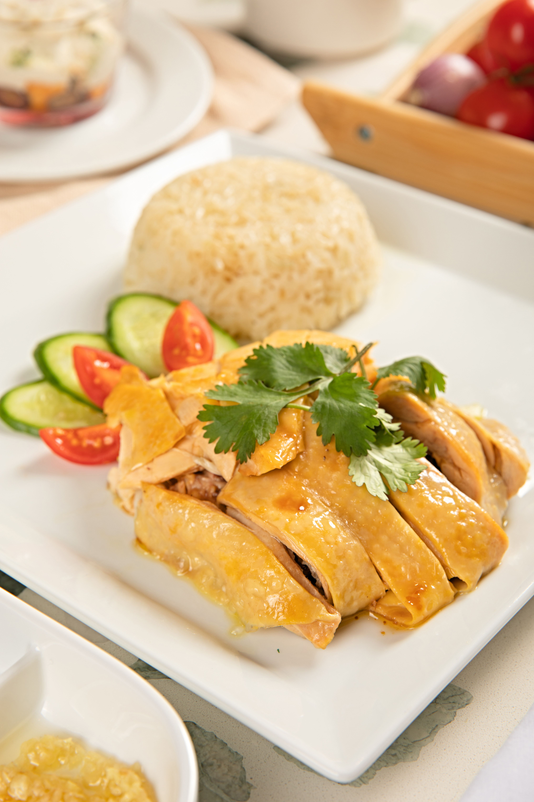
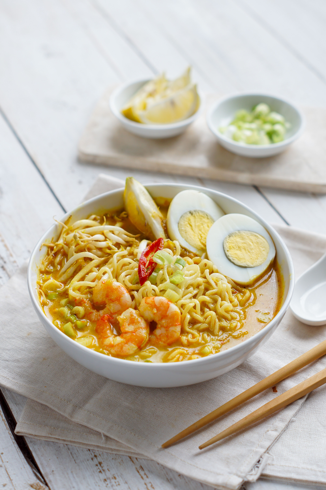
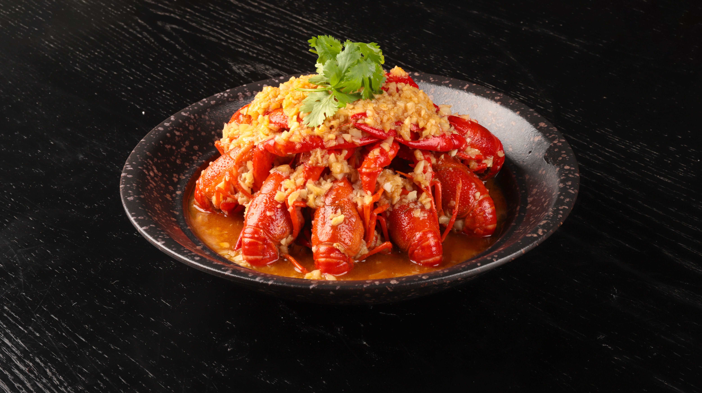

料理

海南鶏飯
やわらかく茹でた鶏肉と、鶏の旨味をたっぷり吸った香り豊かなご飯が特徴のシンガポールの定番料理です。シンプルながら奥深い味わいで、特製ソースと一緒に楽しめる人気の一品です。

ラクサ
ココナッツミルクのまろやかさとスパイスの香りが調和した、シンガポールを代表する麺料理です。濃厚なスープに麺やエビ、ゆで卵などの具材がよく絡み、一杯で満足感のある味わいを楽しめます。

チリクラブ
新鮮なカニを甘辛いチリソースで豪快に仕上げた、シンガポールを代表する名物料理です。濃厚なソースを揚げパンやご飯につけて味わうのも人気の楽しみ方です。